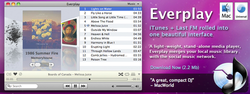

Uzun süredir bilgisayarımda müzik dinlemek için Everplay kullanıyorum. Yaklaşık 3-4 aydır beta tester olarak kullandığım 1.5 sürümü dün yayınlandı. Her yeni sürümü ile müzik çalar olarak bilgisayarımdaki yerini sağlamlaştıran Everplay özellikle beta sürümünde test etme olanağı bulamadığımız şarkı sözleri özelliği ile tam istediğim program olmayı başarmış gibi görünüyor.
Program özellikle hafıza kullanımında da çok iyi. Dün yaptığım denemelerde 50-60 MByte aralığını tüm zorlamalara karşın aşmadı. Bununla birlikte tek eksik şimdilik 64 Bit olmaması gözüküyor. Ayrıca şarkı sözleri veritabanı aranılan şarkı sözüne ulaşamadığında başka veritabanlarını da araştırmalı. iTunes yerine alternatif player arayanlar Everplay’i kaçırmasınlar…
Not: Dün başlayan Everplay piyangosu ile hafta boyunca her gün Everplay lisansı bedava olarak verilecek. Yapmanız gereken tek şey “Yes please! I want a free #Everplay license to spice up my iTunes: http://snarbsoft.com #mac #software #giveaway” şekinde tweet atmak.